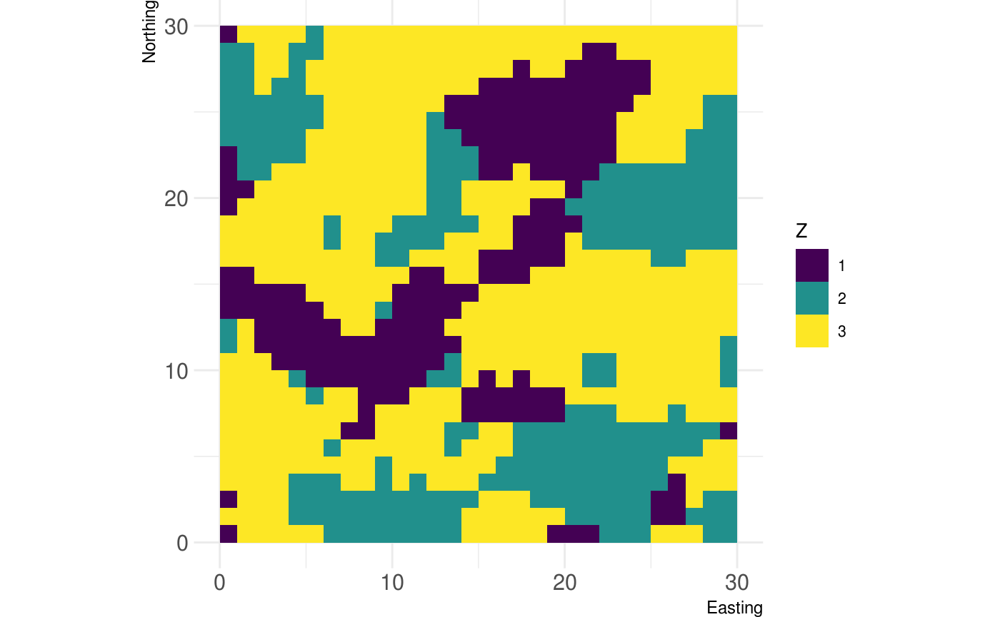

landscape_distribution_statistics.RmdLandscape distribution statistics summarise the properties of all patches belonging to the same class i or of all patches in the landscape together (McGarigal et al. 2012). This includes, for example, the mean, the coefficient of variation, or the standard deviation of a certain metric. These measures are implemented in the landscapemetrics package and are indicated by the corresponding suffixes (_mn, _cv, _sd). However, other distribution statistics also might be of interest. Even though they are not implemented in landscapemetrics, R allows to calculate them straightforwardly.

First, we want to calculate the metric of interest on the patch level. Additionally, we want the patch area of each patch.
# calculate required metric for each patch (e.g. lsm_p_shape)
metric_patch <- lsm_p_shape(landscape)
# calculate area for each patch
area_patch <- lsm_p_area(landscape)Now, we should join the metric value with the area of each patch, multiply the two values, and calculate the area-weighted mean. To calculate the area-weighted mean on landscape-level, comment out the dplyr::group_by() line.
# calculate weighted mean
metric_wght_mean <- left_join(x = metric_patch, y = area_patch,
by = c("layer", "level", "class", "id")) %>%
dplyr::mutate(value.w = value.x * value.y) %>%
dplyr::group_by(class) %>%
dplyr::summarise(value.am = sum(value.w) / sum(value.y))
metric_wght_mean## # A tibble: 3 x 2
## class value.am
## <int> <dbl>
## 1 1 2.35
## 2 2 1.63
## 3 3 3.92The range equals to the minimum value subtracted from the maximum value of the metric of interest for each patch (McGarigal et al. 2012). This can be calculated using the min()/max() function or the range() function.
# class level
metric_range_c <- dplyr::group_by(metric_patch, class) %>%
dplyr::summarise(range = max(value) - min(value))
# landscape level
metric_range_l <- diff(range(metric_patch$value))
metric_range_c## # A tibble: 3 x 2
## class range
## <int> <dbl>
## 1 1 1.6
## 2 2 1.05
## 3 3 3.05## [1] 3.046512The median equals to the value that divides all (ordered) values into two equal groups. There is a base R function available, median(), that can be applied to values grouped by class or all values (landscape-level).
# class level
metric_md_c <- dplyr::group_by(metric_patch, class) %>%
dplyr::summarise(median = median(value))
# landscape level
metric_md_l <- median(metric_patch$value)
metric_md_c## # A tibble: 3 x 2
## class median
## <int> <dbl>
## 1 1 1
## 2 2 1
## 3 3 1.24## [1] 1